Stem borer (Diptera: Tephritidae) in Ageratina
| Record no.: | 0029 |
|---|---|
| Feeding guild: | Stem borer |
| Taxonomy: | Diptera: Tephritidae: cf. Strauzia rugosum |
| Stages observed: | trace, puparium |
| Hosts in Ageratina: | A. altissima (white snakeroot) |
I observed several parasitized puparia of this borer in tunneled-out lower stems of the host, and reared an ichneumonoid wasp from one of these puparia in 2021. I also found a nearly mature larva in its tunnel in a lower stem of the host in the final days of August, 2024, and reared it to the puparium stage. I felt fairly confident these were all tephritids and specifically Strauzia sp., since (1) they were similar in all respects to third instar Strauzia larvae figured in Stoltzfus (1988) and (2) I haven't been able to find a record of any other fly of this size tunneling in white snakeroot stems. However, I wanted to to confirm this identification so I sought to run the puparia through a key. I was not able to find a Diptera puparium key for the Nearctic fauna, but the puparia did key to Tephritidae in Smith (1989).
Apparently the only tephritid borer previously recorded from Ageratina altissima is Strauzia rugosum, described from specimens collected in Ohio, Virginia and West Virginia by Stoltzfus (ibid.). Stoltzfus stated that larvae were found as late as October, with puparia formed no later than early November. The typical pupation location is evidently in the soil, and the puparia collected in the current study may have been formed in the stem because the individuals were parasitized.
On 1 November 2023, I found an affected stem whose top had broken off due to the tunneling in the stem interior. The borer's tunnel extended from roughly 15cm above the break point (in the upper portion of the stem), down to ground level in the lower portion of the stem, but did not appear to extend into the roots. The tunnel width, ragged tunnel walls, and the fact that the culprit abandoned the stem when mature (evidently in order to pupate off the plant) together suggested the tunneling was accomplished by a tephritid borer, but I was unable to confirm this identification because the larva was no longer present.
Some tunnels constructed by tephritids in this host (tentatively identified as such by the parasitized puparia found within them) contained particulate frass that had been cemented to the tunnel walls in aggregate, forming brittle hollow cylinders of agglomerated material. When removed from the tunnels and crushed, some of these cylinders crumbled easily into material reminiscent of solid frass produced by various Coleoptera and Lepidoptera larvae, while other cylinders merely fragmented into smaller chunks and did not easily crumble.
Strauzia rugosum is not to be confused with the Eutreta local feeder in stems of the same host (record 0024).
See also: Ageratina stem insects compilation
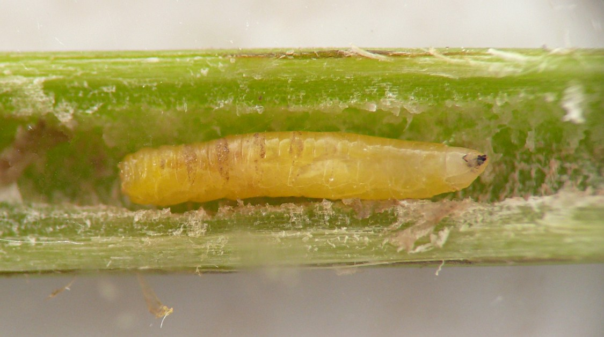
 Prev
Prev
{kind=link}
{kind=link}
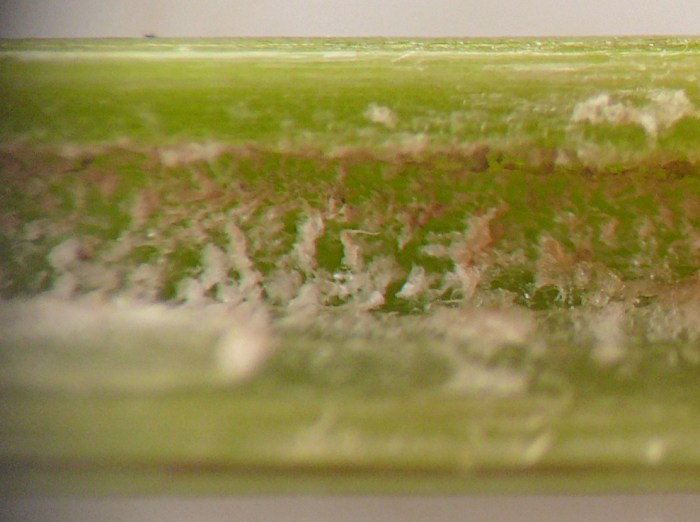
{kind=link}
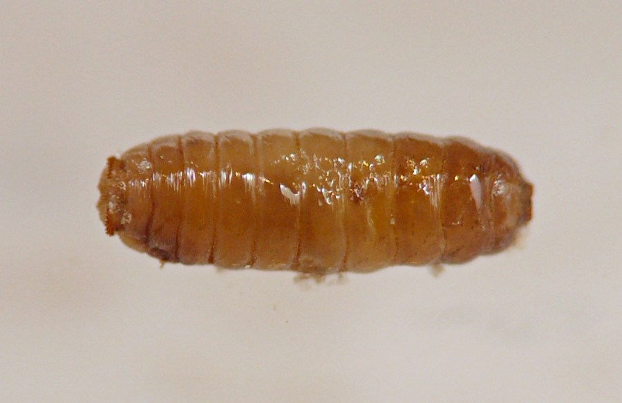
{kind=link}
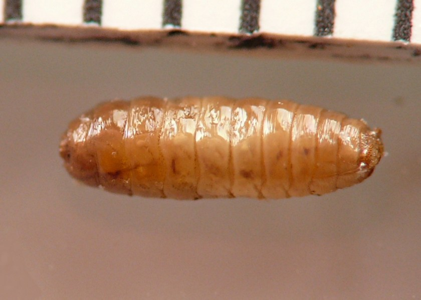
{kind=link}
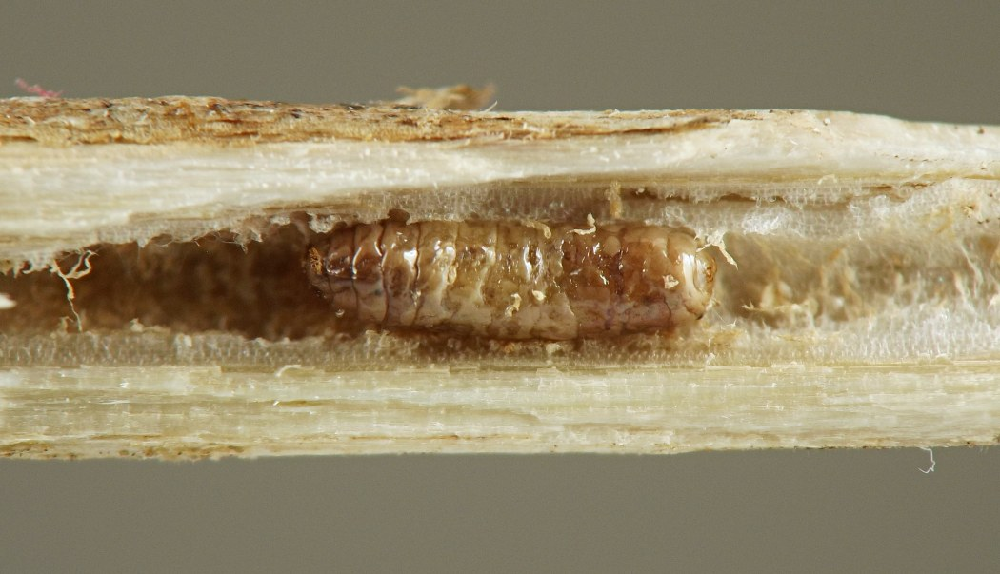
{kind=link}
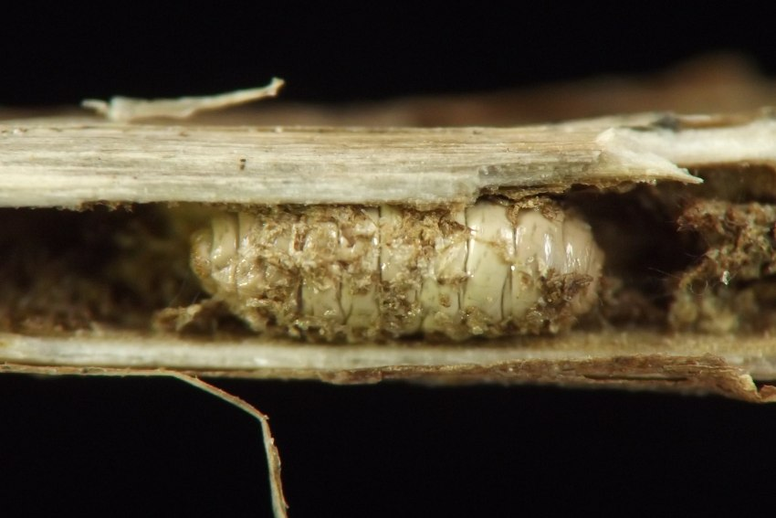
{kind=link}
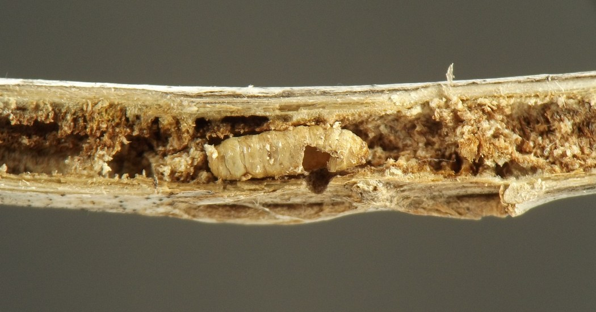
{kind=link}
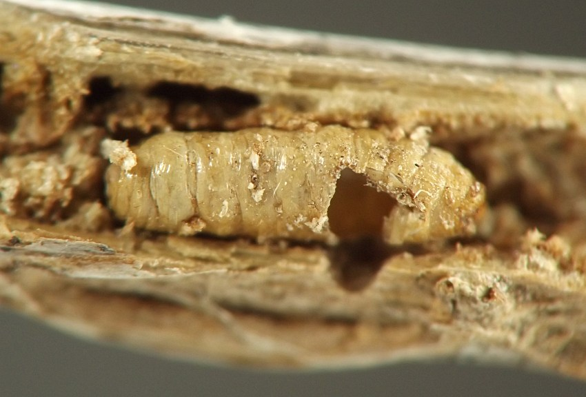
{kind=link}
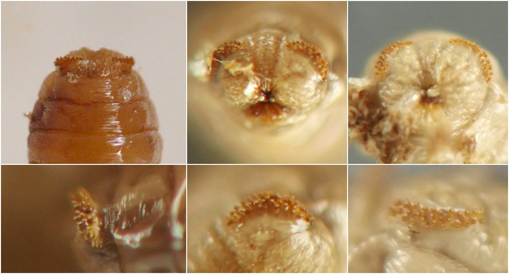
{kind=link}
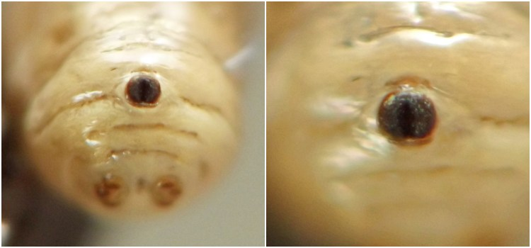
{kind=link}
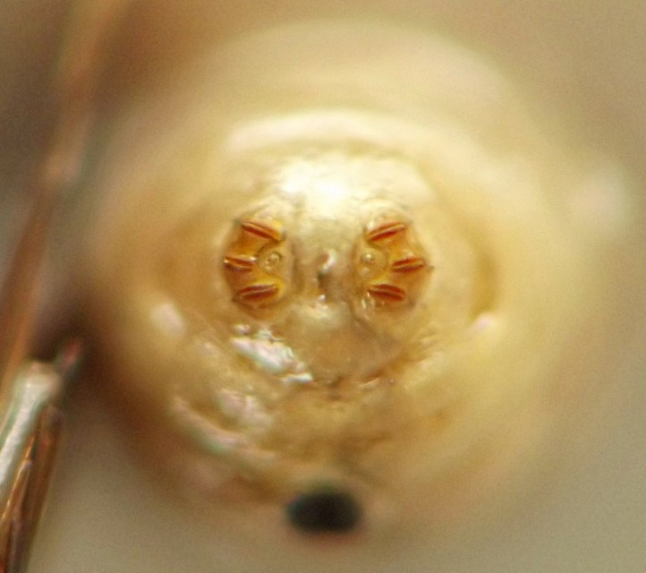
{kind=link}
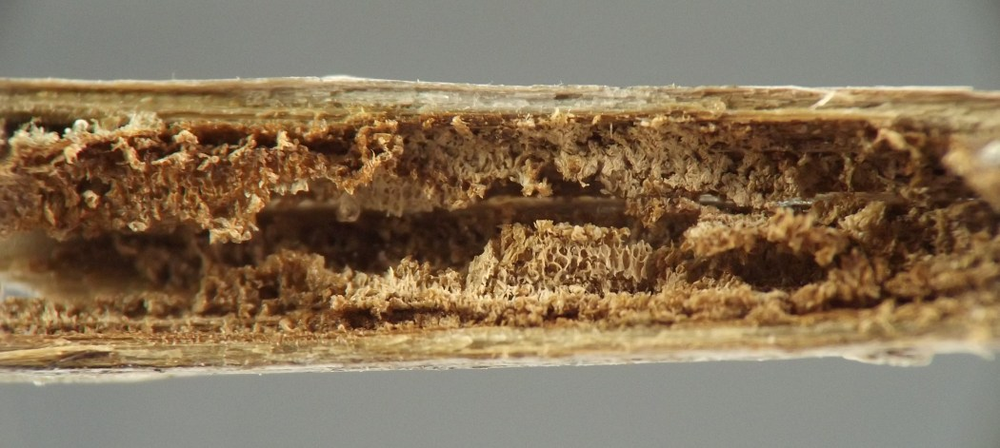
{kind=link}
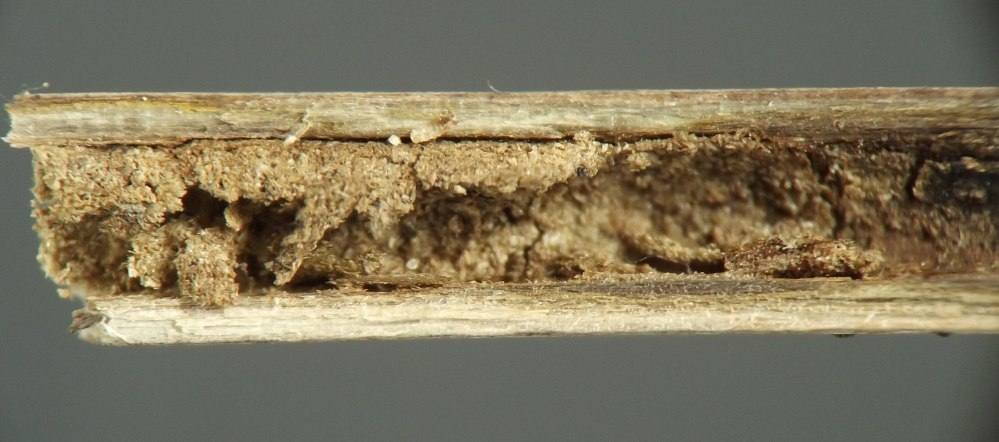
{kind=link}
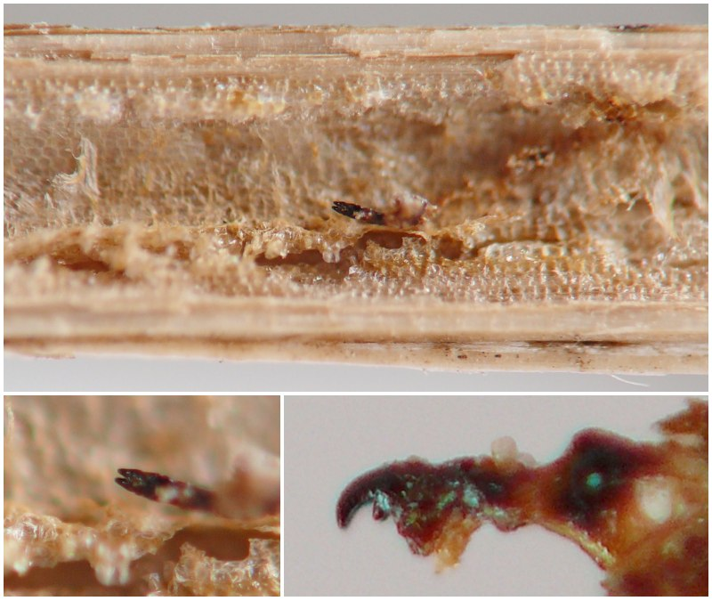
- Smith, K.G.V. 1989. An introduction to the immature stages of British flies. Handbooks for the identification of British insects, vol. 10, part 14.[return to in-text citation]
- Stoltzfus, W.B. 1988. The taxonomy and biology of Strauzia (Diptera: Tephritidae). Jour. Iowa Acad. Sci. 95(4): 117-126.[return to in-text citation]
Page created: February 9, 2026. Last update: none